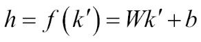
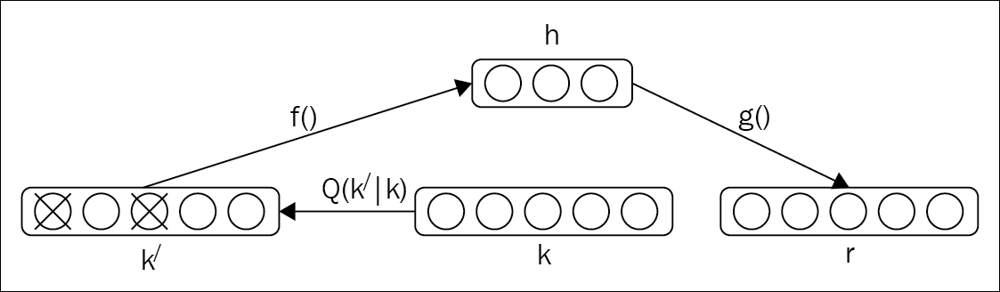
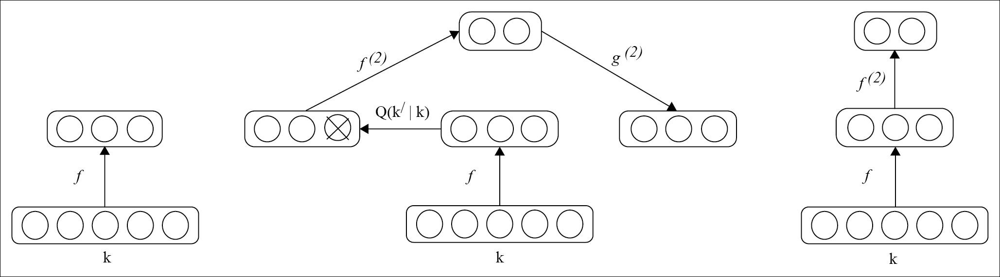

The reconstruction of output from input does not always guarantee the desired output, and can sometimes end up in simply copying the input. To prevent such a situation, in [134], a different strategy has been proposed. In that proposed architecture, rather than putting some constraints in the representation of the input data, the reconstruction criteria is built, based on cleaning the partially corrupted input.
"A good representation is one that can be obtained robustly from a corrupted input and that will be useful for recovering the corresponding clean input."
A denoising autoencoder is a type of autoencoder which takes corrupted data as input, and the model is trained to predict the original, clean, and uncorrupted data as its output. In this section, we will explain the basic idea behind designing a denoising autoencoder.
The primary idea behind a denoising autoencoder is to introduce a corruption process, Q (k/ | k), and reconstruct the output r from the corrupted input k/. Figure 6.6 shows the overall representation of a denoising autoencoder. In a denoising autoencoder, for every minibatch of training data k, the corresponding corrupted k/ should be generated using Q (k/ | k). From there, if we consider the initial input as the corrupted input k/, then the whole model can be considered as a form of a basic encoder. The corrupted input k/ is mapped to generate the hidden representation h.
Therefore, we get the following:

From this hidden representation, the reconstructed output, r, can be derived using r = g (h). Denoising autoencoder reorganizes the data, and then tries to learn about the data for the reconstruction of the output. This reorganization of the data or shuffling of the data generates the noise, and the model learns the features from the noise, which allows categorizing the input. During training of the network, it produces a model, which computes the distance between that model and the benchmark through a loss function. The idea is to minimize the average reconstruction error over a training set to make the output r as close as possible to the original uncorrupted input k.

Figure 6.6: The steps involved in designing a denoising autoencoder. The original input is k; corrupted input derived from k is denoted as k/. The final output is denoted as r.
The basic concept of building a stacked denoising autoencoder to initialize a deep neural network is similar to stacking a number of Restricted Boltzmann machines to build a Deep Belief network or a traditional deep autoencoder. The generation of corrupted input is only needed for the initial denoising training of each of the individual layers to help in learning the useful features extraction.
Once we know the encoding function f to reach the hidden state, it is used on the original, uncorrupted data to reach the next level. In general, no corruption or noise is put to generate the representation, which will act as an uncorrupted input for training the next layer. A key function of a stacked denoising autoencoder is its layer-by-layer unsupervised pre-training as the input is fed through. Once a layer is pre-trained to perform the feature selection and extraction on the input from the preceding layer, the next stages of supervised fine tuning can follow, just as in case of the traditional deep autoencoders.
Figure 6.7 shows the detailed representation to design a stacked denoising autoencoder. The overall procedure for learning and stacking multiple layers of a denoising autoencoder is shown in the following figure:

Figure 6.7: The representation of a stacked denoising autoencoder
Stacked denoising autoencoders can be built using Deeplearning4j by creating a MultiLayerNetwork that possesses autoencoders as its hidden layers. The autoencoders have some corruptionLevel, which is denoted as noise.
Here we set the initial configuration needed to set up the model. For illustration purposes, a batchSize of 1024 numbers of examples is taken. The input number and output number is taken as 1000 and 2 respectively.
int outputNum = 2;
int inputNum = 1000;
int iterations = 10;
int seed = 123;
int batchSize = 1024;
The loading of the input dataset is the same as explained in the deep autoencoder section. Therefore, we will directly jump to how to build the stack denoising autoencoder. We have taken a five-hidden-layer deep model to illustrate the method:
log.info ("Build model...."); MultiLayerConfiguration conf = new NeuralNetConfiguration.Builder () .seed(seed) .gradientNormalization(GradientNormalization .ClipElementWiseAbsoluteValue) .gradientNormalizationThreshold (1.0) .iterations(iterations) .updater(Updater.NESTEROVS) .momentum(0.5) .momentumAfter(Collections.singletonMap(3, 0.9)) .optimizationAlgo(OptimizationAlgorithm.CONJUGATE_GRADIENT) .list() .layer(0, new AutoEncoder.Builder() .nIn(inputNum) .nOut(500) .weightInit(WeightInit.XAVIER) .lossFunction(LossFunction.RMSE_XENT)
The following code denotes how much input data is to be corrupted:
.corruptionLevel (0.3) .build()) .layer(1, new AutoEncoder.Builder() .nIn(500) .nOut(250) .weightInit(WeightInit.XAVIER).lossFunction (LossFunction.RMSE_XENT) .corruptionLevel(0.3) .build()) .layer(2, new AutoEncoder.Builder() .nIn(250) .nOut(125) .weightInit(WeightInit.XAVIER).lossFunction (LossFunction.RMSE_XENT) .corruptionLevel(0.3) .build()) .layer(3, new AutoEncoder.Builder() .nIn(125) .nOut(50) .weightInit(WeightInit.XAVIER).lossFunction (LossFunction.RMSE_XENT) .corruptionLevel(0.3) .build()) .layer(4, new OutputLayer.Builder (LossFunction.NEGATIVELOGLIKELIHOOD) .activation("softmax") .nIn(75) .nOut(outputNum) .build()) .pretrain(true) .backprop(false) .build();
Once the model is built, it is trained by calling the fit() method:
try { model.fit(iter); } catch(Exception ex) { ex.printStackTrace(); }